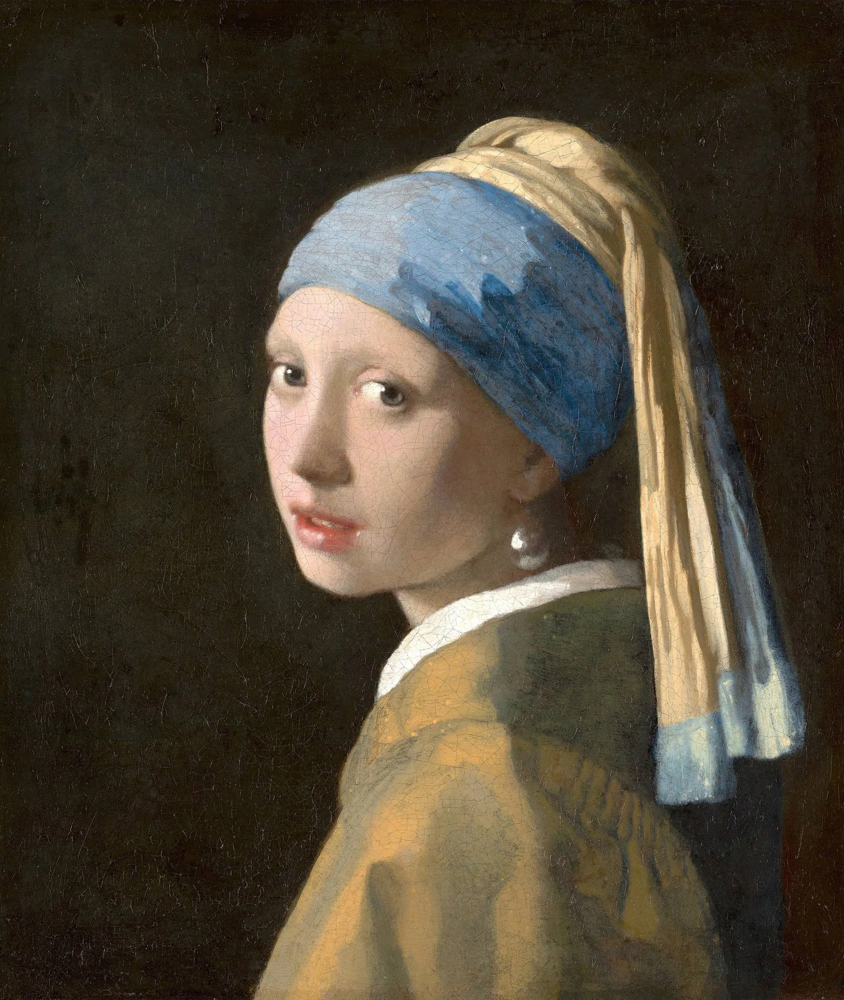
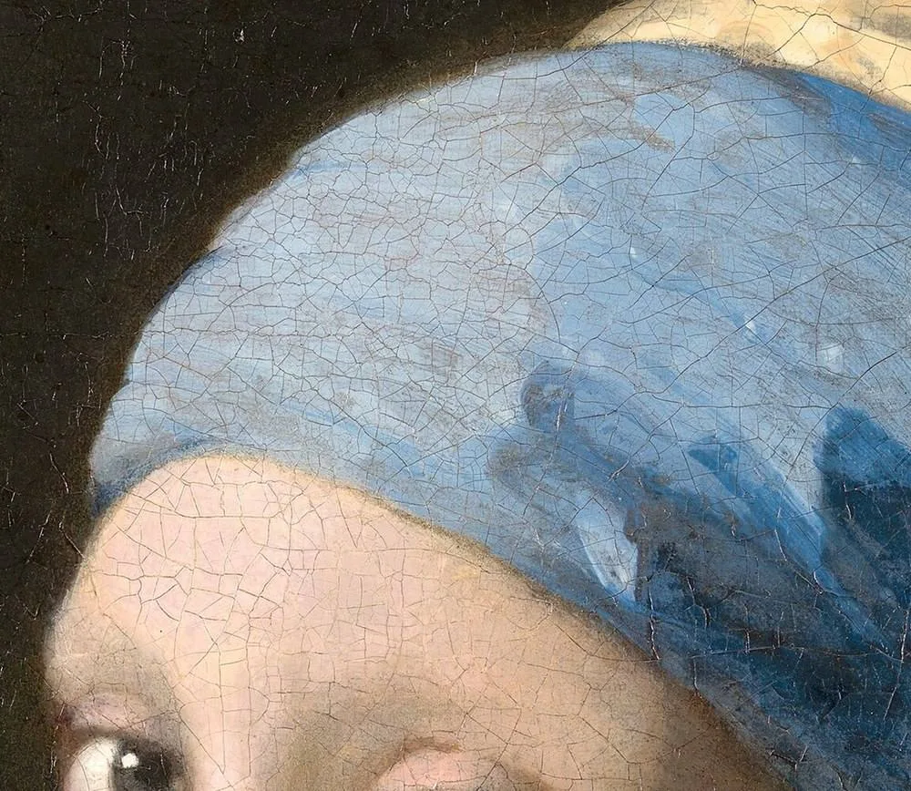
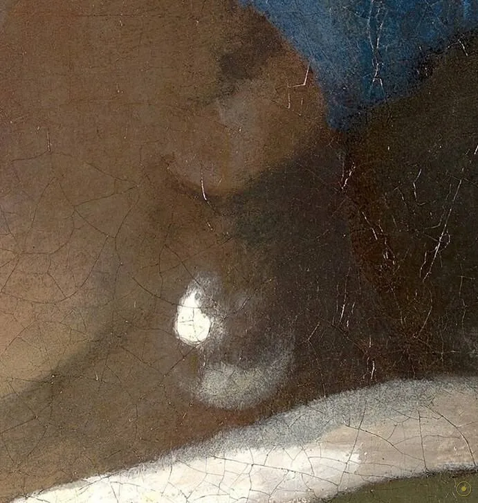
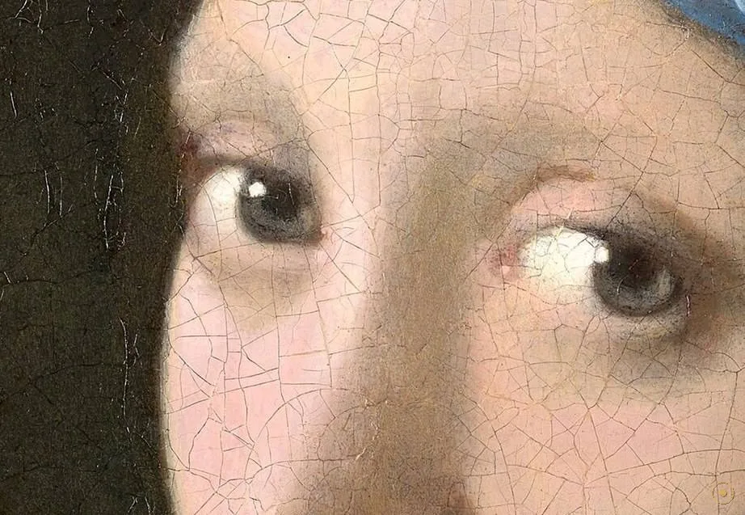
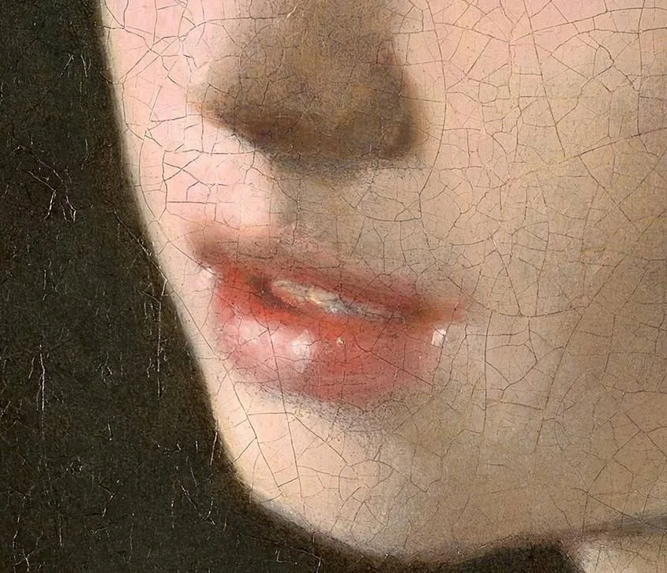
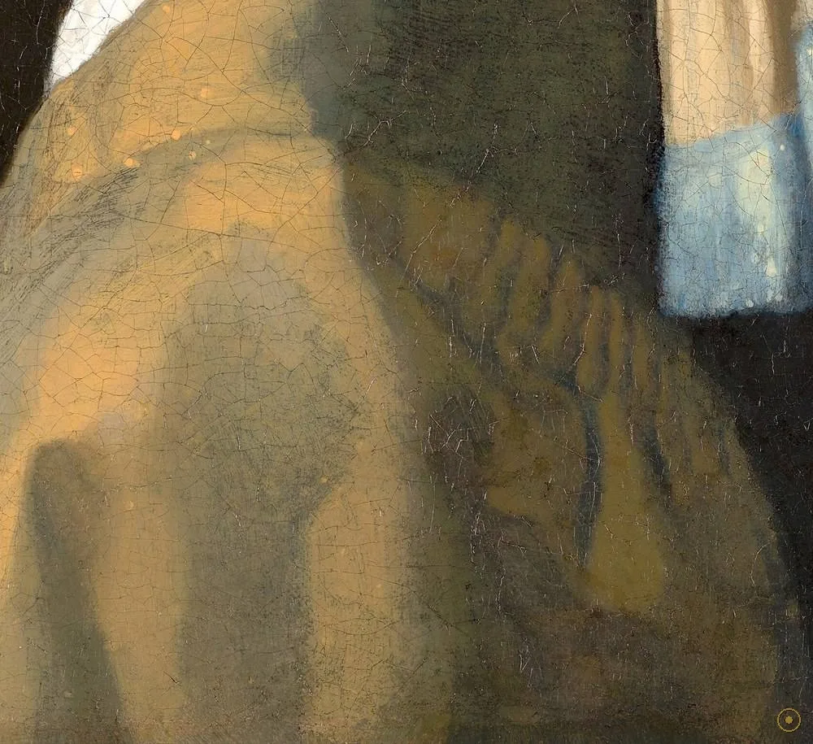
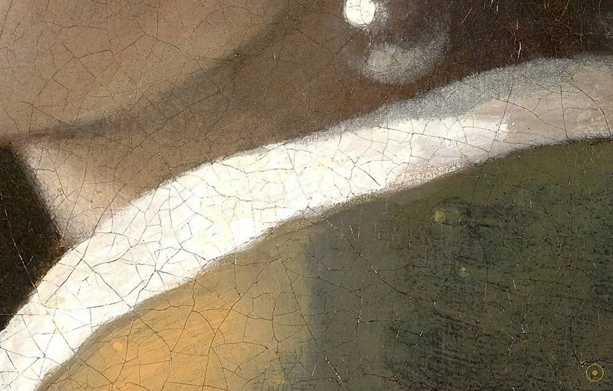
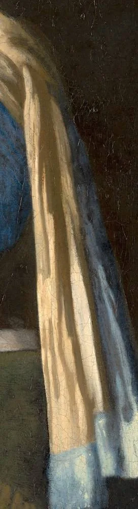
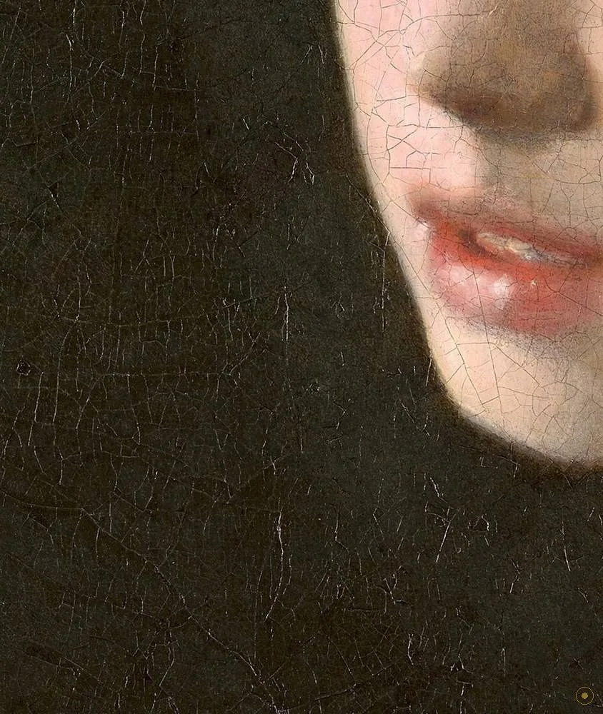

这不是一幅肖像——没有人知道她是谁。它是一个被定格的动作，一个刻意摆出的扮相。
《戴珍珠耳环的少女》(Girl with a Pearl Earring，荷兰语 Meisje met de parel) 大约作于 1665 年，布面油画，44.5 × 39 厘米，现藏荷兰海牙的莫瑞泰斯皇家美术馆 (Mauritshuis)。画面极其简单：一个少女从深色的背景里回过头来，戴着一顶蓝黄相间的头巾，肩上披着蓝绿与金褐的衣物，耳垂上悬着一颗硕大的珍珠。除她之外，画中空无一物。
它特殊，因为它是「tronie」——荷兰语里的一个专称，指并不为某个具体的人而作的「头像练习」或「扮相人物」。她不是谁的女儿，也不是谁的妻子；她戴的是想象中的「东方」头巾，不是当时荷兰少女的日常装束。正因如此，她的身份从 17 世纪到今天始终是悬案：主流假说认为是维米尔的女儿玛丽亚 (Maria)，也有人认为是赞助人范勒芬 (van Ruijven) 家之女玛格达莱娜 (Magdalena)——但都没有定论。
所以这一页不替你认定她是谁，只带你走近她：点开画面上的 ✦ 光点，去看那一道目光、微张的唇、蓝头巾、白领口、蓝黄的披衣、柔到几乎没有边线的脸缘，以及那颗把整幅画点亮的珍珠。留意一个事实——她什么也没说，你却觉得她正要对你说些什么。
—— 画面左上角有维米尔的署名缩写「IVMeer」，却没有年份；她是谁，画上并没有写（据通行说法）
在本页左下角，可以点亮一段为这次回眸特别挑选的钢琴独奏。
从一道目光到一颗珍珠：每一处，都是维米尔与「光」的一次较量。

点按画面上的 ✦ 光点，查看每一处细节
从 17 世纪代尔夫特的一间画室，到 1881 年一场几乎贱卖的拍卖，再到今天被称作「北方的蒙娜丽莎」——她的命运，比表情更耐读。
c.1665 · 代尔夫特 · 创作
17 世纪五六十年代，维米尔在代尔夫特画了一批以小人物为主角的室内画。此作属于其中的「tronie」——不画具体人物，而练习头部与扮相。她戴的头巾来自对「东方」的想象，那颗珍珠则是一处被夸大的光点。维米尔用的蓝是昂贵的群青，这在当时意味着：画家舍得为一种颜色下本钱，也说明这幅小画并不「随便」。
➤1881 · 海牙 · 流散
1881 年，海牙一场拍卖会上，这幅画被当作无名之作廉价售出——据记载成交价仅 2 盾（另加 30 分佣金），买家是阿诺尔德斯·安德里斯·德·通贝 (Arnoldus Andries des Tombe)。1902 年，他把它连同另外两幅画遗赠给海牙的莫瑞泰斯皇家美术馆。换言之，她「被当作名作」的历史，其实只有一百多年。
➤1902–今天 · 辨认
进入博物馆后，她的名声一路攀升，最终被冠以「北方的蒙娜丽莎」之名，成为莫瑞泰斯的镇馆之作。1994 年的修复让她恢复了原有的深度；2014 与 2018 年，学者们又用显微镜与计算成像重新「读」了一遍这幅画。二战期间，荷兰的重要藏品曾被转移到林堡省的洞窟中躲避战火，她也在其列——她不仅被画过，也被藏过、修过、反复看过。

它是 tronie，不是肖像。tronie 是 17 世纪荷兰的一种绘画类别：不以描绘某个确切、有姓名的人物为目的，而重在表现「一颗头颅与它的装扮」。因此「她是谁」这个问题，也许从一开始就不是这幅画想要回答的。
1881 年它被贱卖。据记载，此画在海牙一场拍卖会上以 2 盾（另 30 分佣金）成交，被德·通贝 (des Tombe) 买下；1902 年他将其遗赠给莫瑞泰斯皇家美术馆——它「被当作名作」的历史，只比二十世纪略长一点。
2018 年它被重新「读」了一遍。莫瑞泰斯「The Girl in the Spotlight」项目以显微镜与成像技术逐层检查：确认她几乎没有睫毛、珍珠上有两处白色高光、背景原本可能是一幕绿色帘子（绿色釉料褪色致暗）。项目同时公开了研究全过程。
关于那颗珍珠是否为真：2014 年天文学家文森特·伊克 (Vincent Icke) 据尺寸与密度推算，它「不可能是真珍珠」，更可能是抛光锡或玻璃——此说有趣，但学界并未一致接受（真伪仍存争议）。而她本人的身份，主流只是假说：一说为维米尔的女儿玛丽亚，一说为赞助人范勒芬家之女玛格达莱娜，均无定论。
以极少的元素，构成一张几乎不容转眼的画面。

一处被夸大的高光，成就了整幅画的名字。
由青金石磨成的群青，当时比黄金还贵。

瞳孔里的一点白，让眼神活了三百五十年。

湿润的高光放在下唇，表情悬在半空。

外侧蓝绿、内衬金褐，压住整幅画的重心。

亮色的领口，把一张脸从暗处框出来。

一条竖带，为满幅的曲线提供支点。

色与色直接相碰，形体像从暗处浮出。
在 17 世纪的荷兰语里，tronie 指一种带有练习性质的头像：它不追求画中人的确切身份，而专注神情、光线与扮相。若把它当作肖像去追「她是谁」，可能一开始就走偏了。《戴珍珠耳环的少女》正是这一体裁最著名的例子——它把一张脸从身份的束缚里解放出来，只留下「神态」本身。
维米尔一生几乎都在代尔夫特度过，存世作品极少（约三十余幅）。他特别着迷于光：偏左的窗光、器物上的反光、墙上的一小块亮斑。许多研究者认为他曾借助某种光学装置（如暗箱）来观察与取景，这或许解释了画面中那些过于「准确」的柔光与高光（此说为常用假说，并非定论）。
1881 年它只卖了 2 盾；此后一百多年，它的评价一路攀升，最终成为荷兰绘画的符号之一。它的接受史提醒我们：一幅画的价值并不完全由画面决定，也由后来的人如何看、如何研究、如何修复决定。她的「名」，很大程度上是被二十世纪重新授予的。
1999 年，作家特蕾西·舍瓦利耶 (Tracy Chevalier) 以此画为题写成小说，虚构了一个少女与画家的故事；2003 年被改编为同名电影。至此，画中那张没有名字的脸，被后人赋予了无数种身世——这既是它的魅力，也正是 tronie 这一体裁留给想象的空间。
维米尔于代尔夫特完成此画，布面油画 44.5 × 39 cm，左上角署名缩写「IVMeer」，未署年份。
海牙一场拍卖会上被廉价买下（据记载 2 盾，另 30 分佣金），买家为德·通贝 (des Tombe)。
德·通贝将其遗赠海牙莫瑞泰斯皇家美术馆，此画由此进入公众视野。
经过一次修复：去除旧清漆、重衬画布，色彩与目光的深度重新显现。
莫瑞泰斯「The Girl in the Spotlight」项目以显微与成像技术重新研究，发现背景原可能为绿帘等细节。